Jasmines are native of tropical and subtropical regions and introduced in the mid sixteenth century. Among the large number of species existing, only three species have attained importance in commercial cultivation. Jasminum sambac is considered as a native of the East Indies. Jasmine blossoms have been in use in India, China and countries of mystic orient for ceremonial purpose, as religious offerings and for perfuming the hair oils, etc. since time immemorial. The name Jasmine is of Arabic origin and is believed to have been derived from Yasmin. It is reported that the height of its popularity reached its peck two to five hundred years ago at canton and metropolis of southern China.
-
Jasminum auriculatum - Mullai
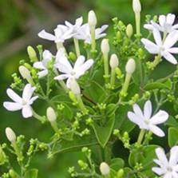
Jasminum grandiflorum
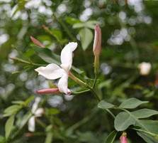
Jasminum sambac - Gundumalli / Malligai / Arabian jasmine /Tuscan jasmine
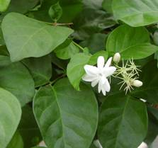
-
Jasminum pubescens - Kakada
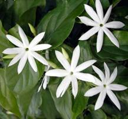
Uses/Nutrient Value
Jasmine has been cultivated for various purposes since very early times. Flowers and buds are used for making garlands, bouquets, veni for religious offerings. They are also used for the production of perfumed hair oils and attar. The world famous jasmine oil is extracted from the flowers of Spanish jasmine (J. grandiflorum). The oil is also used in soap and cosmetic industry. The flowers of Arabian jasmine (J. Sambac) are reported to be used in China for flavoring tea. They also contain yellow pigments and hence used as substitute for saffron. Flowers and other parts also used in medicines.
Area and Distribution
Though jasmines are distributed in tropical and subtropical countries of the world, a large number of scented species are around the regions comprising India, China and Malaysia. Among these, about 40 species are reported to occur in India. Gamble (1957) were recorded 20 species in the former Madras Presidency State and some of these species are found in Mumbai, Bihar, Orissa, Chotanagpur, upper Gangetic plains and sub Himalayan tracts. The distribution of some important jasmine is given below: -
J. auriculatum |
India |
J. grandiflorum |
Subtropical Himalayan Region |
J. favreri |
Myanmar |
J. humile |
Tropical Asia |
J. flexile |
India |
J. multiflorum |
India, China, Myanmar, Malaysia, U.S.A |
J. officinale |
Iran, India, China |
|
|
Botanical Description
The genus Jasminum belongs to the family Oleaceae and order Oleales. They are climbing, trailing and erect shrubby flowering plants and these are both over green and delicious species. Leaves are opposite or alternate, simple, trifoliate or pinnate, leaflets entire. Flowers are white, yellow or rarely reddish, sometimes solitary, more often in cymose clusters of three to many, usually fragrant; corolla tubular with four to nine lobes, stamens two, ovary 2 loculed with 1-4 erect ovaries. Fruit is a berry and black in colour.
Cultural requirements
Climate Requirement
The ideal conditions for their successful cultivation are warm summer and mild winter. Jasminum spp. is usually grown in the open field for commercial flower production. The Cool house species should be kept in a temperature of 45-55º F (7-13º C). J. grandiflorum and J. sambac are sensitive to frost.
Soil Requirement
Jasmine prefers well drained rich sandy loam to clay soil. Jasminum species are usually grown in the open for commercial flower production.
Varieties
J. auriculatum
Parimullai: Selection from a local type. Medium round bud. Resistant to gall mite. Yield 8 t/ha with flowering duration about 9 months/year.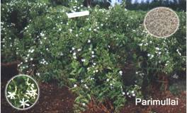
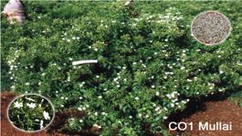CO.1: Selection from a Long Round type. Flowers have long corolla tube; easy for
harvesting and marketing. Yield 8.8 t/ha.CO.2: Induced mutant from a Long point type. Longer corolla tube; flower buds bolder;
field tolerant to phyllody; Yield 11.1 t/ha.
Others: Long Point, Long Round, Medium Point, Short Point and Short Round.
J. grandiflorum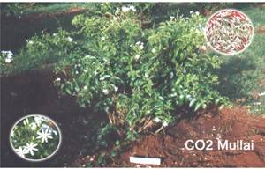
CO.1: Clonal selection from germplasm. Suitable for both loose flower production and oil extraction. Pink streaks are found on external surface of petal. Average yield 10 t/ha. The concrete recovery is 0.29 per cent.
CO.2: Induced mutant from CO1 Pitchi. Bolder pink buds with long corolla tube yield
11.68 t/ha.
]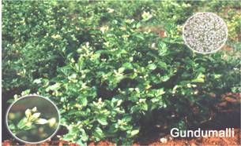J. sambac
Ramanathapuram gundumalli: Round flowers
with good fragrance; yields 7 to 8 t/ha.
Khoya: Flowers familiar to J.sambac,
but bolder buds with less fragrance.
.
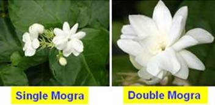Others: Ramabanam, Madanbanam,
Single Mogra,
Double Mogra, Iruvatchi,
Kasthurimalli, Oosimalli, Soojimalli.
Preparation of field
Land with proper drainage, irrigation facilities and sunny location are essential. Pits of 45 cm3 are dug at least one month before planting and exposed to sunlight. A few days before planting, pits are filled with 2 parts of FYM and one part each of fresh earth and coarse sand.
Propagation
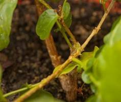Jasmine can be propagated by cuttings, layering, sucker, grafting, budding and tissue culture.
J. auriculatum Semi hard wood cuttings
J. grandiflorum Terminal cuttings
J. sambac Terminal and semi hardwood cuttings.
Semi hardwood of J. sambac
- Growth regulators. Quick dipping (of the basal cut end) in IAA (or) IBA @ 1000 ppm for terminal cuttings and 2500 ppm for semi hard wood cuttings is done.
- Best rooting medium: - sand: vermiculite: moss at 1:1:1 ratio.
Plant Spacing, density and season
Species |
Spacing |
Density (Plants/ha) |
Season |
J.auriculatum |
1.5 x 1.5 m |
4400 |
June to November |
J.grandiflorum |
2.0 x 1.5 m |
3350 |
- do - |
J.sambac |
1.25 x 1.25 m |
6400 |
- do - |
Time of Planting
The best time for planting in most parts of India is during the monsoon but one can plant jasmine almost round the year in climates as of Bangalore. Once planted, the jasmine remains in the field for 10-15 years.
Planting
- Land with proper drainage, irrigation facilities and sunny location are essential.
- Pits of 45 cm3 are dug at least one month before planting and exposed to sunlight.
- A few days before planting, pits are filled with 2 parts of FYM and one part each of fresh earth and coarse sand. Pits are to be watered to settle the mixture.
- Well rooted, healthy and strong plants are planted one in each pit.
Nutrition
- Jasmine responds to intensive manuring.
- Too much of manuring encourages vegetative growth and hampers quality and quantity of blooms.
Nutritional requirement
Species |
Quantity(g/plant)
N P2O5 K2O |
Method |
J. auriculatum |
60 120 120 |
6 split doses at bimonthly intervals |
J. grandiflorum |
100 150 100 |
2 split doses :
(1) June - July
(2) December - after pruning |
J. sambac |
60 120 120 |
2 split doses :
(1) June-July
(2) November - after pruning |
Foliar Nutrition
- Spraying of zinc 0.25% and magnesium 0.5% before flowering increases flower yield.
- For Fe deficiency, FeSO4 at 5g/lit. is sprayed at monthly intervals until the chlorotic symptoms disappear.
Irrigation
- Flooding once in a week or once in ten days depending on the soil and climatic conditions.
Pruning
Need for Pruning
- In jasmine, flowering habit is terminal and axillary. So increasing the number of shoots would increase the yield, for which pruning is essential. Pruning influences growth, flower bud initiation, differentiation and ultimately the flower production.
Pruning period
Species |
Time of pruning |
J. auriculatum |
Last week of January |
J. grandiflorum |
Last week of December |
J. sambac |
Last week of November |
Pruning height: 45-50 cm from the ground level.
Weeding
- Commonly done manually but is expensive.
- Chemical weed control is effective and economical.
- Spraying Oryzalin 1 or 2 applications is effective.
- Mulching also reduce weed population.
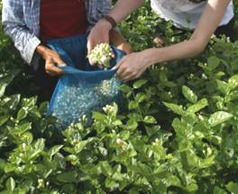Harvesting
- Jasmine gives economic yield only from the third year and up to 12-15 years and then the yield starts declining.
- The stage of harvest depends on the purpose of flowers to be harvested. For fresh flowers, fully developed unopened flower buds are picked in the early morning, while for extraction of concrete only fully opened fresh picked flowers are required.
- Picking of flowers after 11 a.m. will considerably reduce the yield and quality of the concrete.
- Damage to flowers during harvest and transit will affect shelf life of fresh flowers and concrete recovery.
Yield
Species |
Flowers yield (kg/ha) |
Concrete recovery (%) |
J. auriculatum |
4733 to 9152 |
0.28 to 0.36 |
J. sambac |
739 to 8129 |
0.14 to 0.19 |
J. grandiflorum |
4329 to 10144 |
0.25 to 0.32 |
Grading
- There are no standard grades available for jasmine.
- The flowers may be graded according to the corolla tube length, bud size, shape and freshness.
Packing
- Harvested flower should be given cold treatment before packing.
- Packing should be functional, economical and attractive besides being acceptable in markets. Corrugated cardboard boxes are good for distant market.
- Wholesalers pack flowers in bamboo baskets.
- They are packed so as to maintain some moisture and air circulation in the baskets.
- Water is sprinkled on the newspapers covering the inside of the basket.
- The top is covered with paper again and closed with a bamboo basket cover or gunny sack which is stitched at the edges.
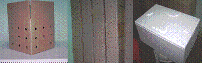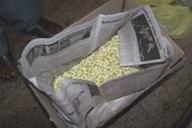Packing Jasmine for local market Special Packing for Export
Longevity of flowers
Stage of harvest and pre and post harvest handling markedly influence the quality of picked flowers. In J. sambac var. Khoya treatment with boric acid (0.5%), sucrose (1%), aluminium sulphate (0.1%) and silver nitrate (0.01%) flowers remained fresh up to 72 hrs.
Plant protection
Pests
Bud worm (Hendecasis duplifasciallis): The bud worm which is a greenish larva with a black head bores into immature buds and feeds on floral structures. Spray of Monocrotophos 2 ml/l should be applied for the control of bud worm.
Red Spider Mite (Steneotarsonemus pallidus): The incidence of red spider mite is high during warm and dry weather, especially during summer. The mites are seen feeding on under surface of the leaves which become yellow and drop off. Thimet 2g/l should be given. Five applications of Aldrin at ten days interval were found effective.
Blossom midge
Spray Monocrotophos 36 WSC 2 ml/lit or Endosulfan 35 EC 2 ml/lit
Diseases
Leaf Blight
Caused by two fungi viz., Cercospora jasminicola and Alternaria jasmini. Symptoms are reddish brown spots on upper surface of leaves. Spray of Benlate (0.4%), Bavistin (0.1%) and Bordeaux mixture (1%) are equally effective.
Wilt
Caused by Fusarium solani, symptoms are yellowing of lower leaves which gradually spread upwards and finally resulting in death of the plant. Drenching of soil around the plants with Bordeaux mixture (1%) is the control measure.
Yellowing of leaves
It is caused by 3 factors viz., iron deficiency, nematode infection and root rot disease.
Iron deficiency
It can be rectified by spraying ferrous sulphate 5 g/lit at monthly intervals until the chlorotic symptoms disappear.
Nematode
Initially test the soil for nematode infection. Apply 10 g of Temik granules near root zone and then irrigate the field.
Root rot
Drench the soil around the plant with Copper oxychloride at 2.5 g/lit.
Season of flowering and harvest
Flowering commences in March - April. Fully developed unopened flower buds should be picked in the morning hours.
Extraction of jasmine concrete
Jasmine concrete obtained from Jathi Malli (Pitchi) – Jasminum grandiflorum is a wax like substance containing the natural flower perfume together with some plant waxes, albumin and colouring matter. The natural perfume is available in very small quantity (0.25%) in jasmine flowers in the form of volatile oil. The usual and simple method of steam distillation for the extraction of the volatile oil could not be adopted in this case as jasmines do not yield the perfume oil on steam distillation. Hence, the solvent extraction method is practiced in which the principle is that the odoriferous substances of the flower are allowed to be absorbed by a highly volatile solvent and then the solvent is evaporated leaving the odoriferous principles.
STEP I – Solvent treatment
Flowers are soaked in Food Grade Hexane (Having Boiling point of 70oC).
Mixing Hexane 2 litres / kg of flowers for 30 minutes.

Rotate the container slowly for 20 minutes in the rotary type of extractor.

Perfume substance along with wax and pigments dissolved in Hexane
STEP II – Evaporation
Perfume laden solvent is led into the evaporator

Evaporation at a constant temperature of 75oC.
Vapour of the solvent condemned into liquid for recycling

Liquid (Perfume, wax & pigments) is distilled in a vacuum distillation unit for complete removal of solvent in the still

Floral concrete settled in the still in the form of molten wax

Cooled and Stored in glass (or) aluminium containers
Marketing, Distribution and Transportation
Transporting of jasmine flower is done through trucks, ships (Refrigerated) etc. Before long distance transportation it is better to keep flowers in bamboo basket which should be covered under moist muslin cloth. Proper care should be taken so that flowers are not handled badly or damaged during transportation.
Intercultural operations
Pruning
In Jasmine flowering habit is terminal and axillary so increase in the number of shoots is main criterion for increasing yield. In J. auriculatum pruning from 24 January is best time. In J. sambac pruning in either November or February to 30 cm gives highest flower yield. In J. grandiflorum mid December time is found suitable for pruning.
Important tips and best practices for crop cultivation:
- Always use disease free planting material.
- Timely weed management should be done.
- Flower should be harvested at proper time and stage. These are distributed to the market in bamboo basket which should be covered under moist muslin cloth.
Alternate Use
Veni, gajra, garland, loose flower, flower arrangement
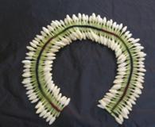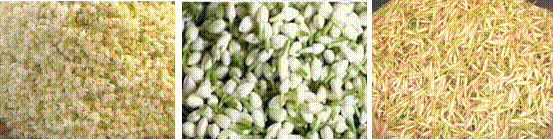
*********
1. Spanish Jasmine is botanically called as
a. Jasminum grandiflorumb. J. auriculatum
c. J. sambae d. J. pubescens
2. Inflorescence of jasmine is
a. Raceme b. Panicle
c. Cymose d. Spike
3. J. sambac is commercially propagated through
a. Semi-hardwood cutting b. Terminal cutting
c. Air layering d. Hardwood cutting
4. Post harvest life of jasmine can be increased by spraying
a. Boric acid b. Sucrose
c. both a & b d. None of the above
5. Solvent used for the extraction of jasmine concrete in
a. Methane b. Hexane
c. Ethrel d. Toluene